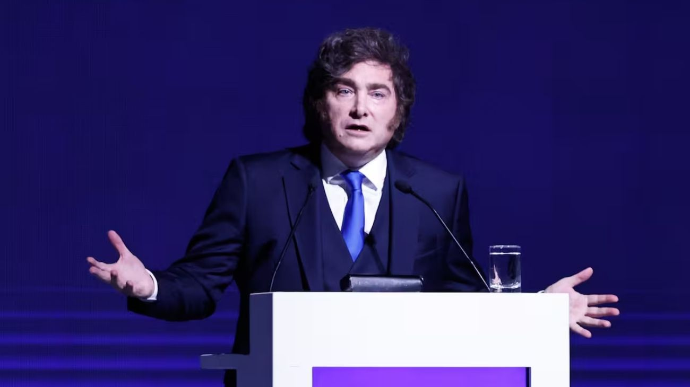

Milei envió al Congreso el proyecto para cerrar los juicios del default de 2001: ¿qué implica el acuerdo?
El gobierno busca saldar uno de los pasivos más persistentes de la historia argentina: los litigios abiertos con fondos de inversión que nunca ingresaron a las reestructuraciones de deuda previas.

El gobierno nacional avanzará en la regularización de uno de los pasivos más persistentes de la crisis de 2001. El presidente Javier Milei envió al Congreso un proyecto de ley que habilita el cierre de los litigios aún abiertos con acreedores que no ingresaron a reestructuraciones previas. La decisión de pasar por el Parlamento no es casual: en la Casa Rosada entienden que la vía legislativa le otorga mayor solidez política al acuerdo y reduce el riesgo de futuras impugnaciones judiciales, a diferencia de una resolución puramente administrativa.
Los fondos involucrados son Bainbridge Fund, con un reclamo de aproximadamente 96 millones de dólares más intereses, y el grupo liderado por Attestor Capital, que acumula fallos firmes por más de 465 millones de dólares. El proyecto contempla pagos de 67 millones de dólares a Bainbridge y 104 millones al grupo de acreedores, con quitas superiores al 30% sobre los montos reclamados. Ambos fondos contaban con sentencias a su favor en tribunales internacionales, y en los últimos años avanzaron sobre activos vinculados a empresas estatales para intentar cobrar sus acreencias.
Uno de los puntos centrales de la propuesta es que los acuerdos pondrían fin a todas las acciones legales de los acreedores, incluyendo intentos de embargo sobre activos del Estado en el exterior, y frenarían los procesos de "discovery" mediante los cuales los demandantes solicitan información sobre operaciones financieras del país fuera de sus fronteras. El texto también incluye cláusulas para evitar nuevos litigios y garantizar que los acreedores no interfieran en futuras operaciones de financiamiento.
El Ejecutivo solicitó un tratamiento urgente del proyecto, ya que los acuerdos tienen como fecha límite el 30 de abril de 2026. En caso de no ser aprobados antes de ese plazo, podrían caerse y obligar al país a continuar los juicios en condiciones más desfavorables. La coordinación de la iniciativa está a cargo del procurador del Tesoro, Sebastián Amerio, y de la secretaria de Legal y Técnica, María Ibarzabal. El texto ya fue ratificado ante la jueza estadounidense Loretta Preska, quien recibió el 10 de abril la confirmación de que el acuerdo definitivo fue firmado el 1 de ese mes.